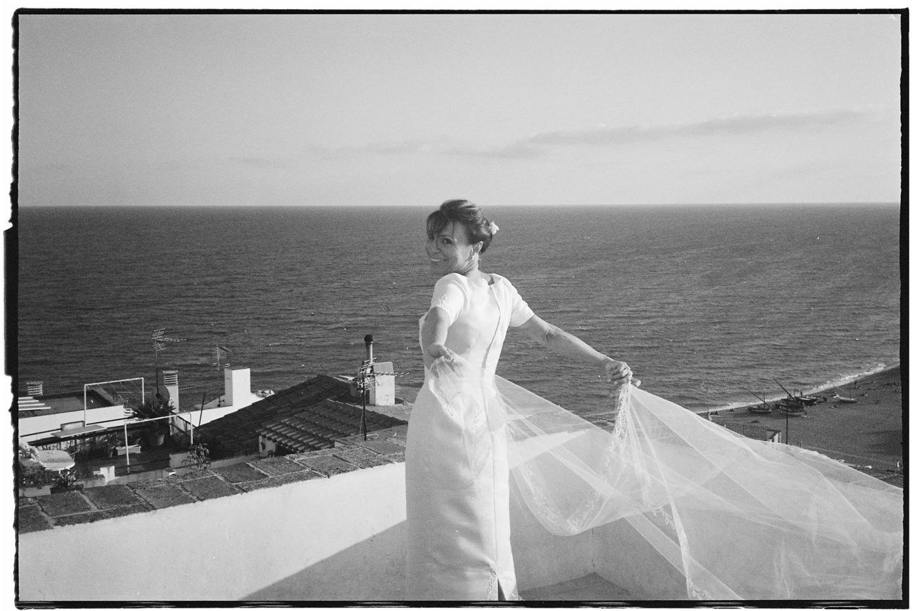
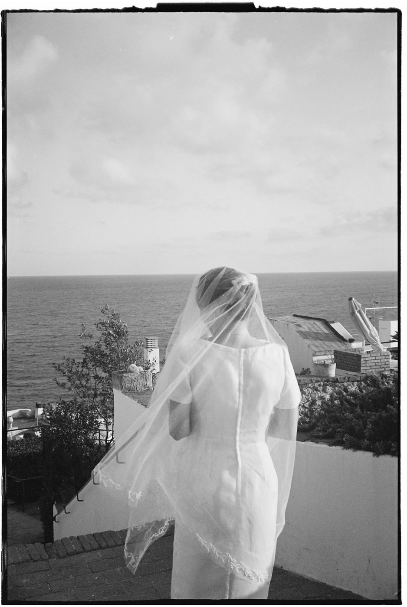
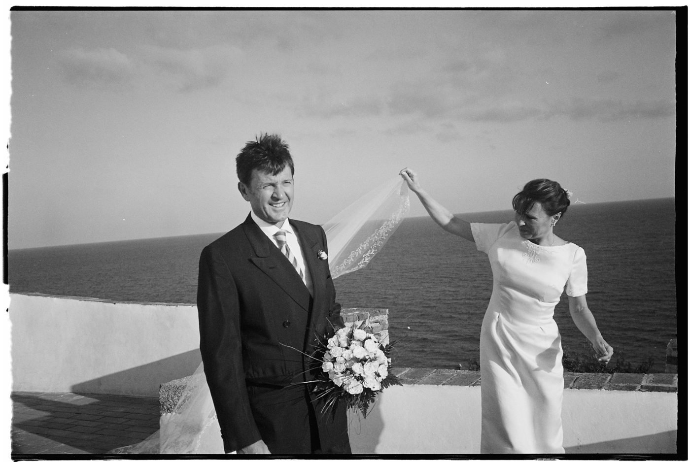
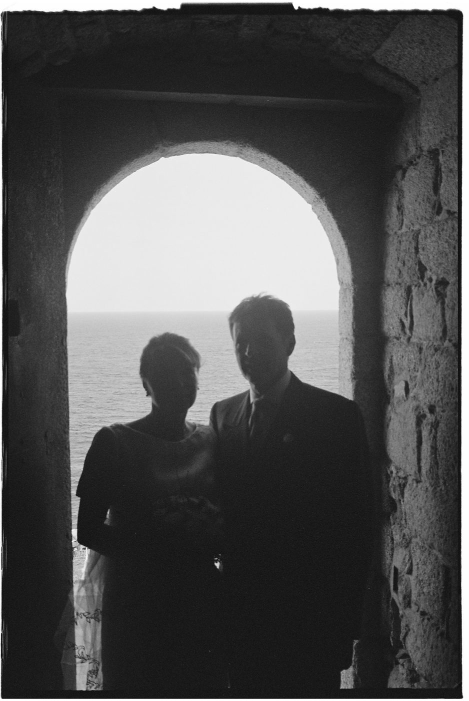
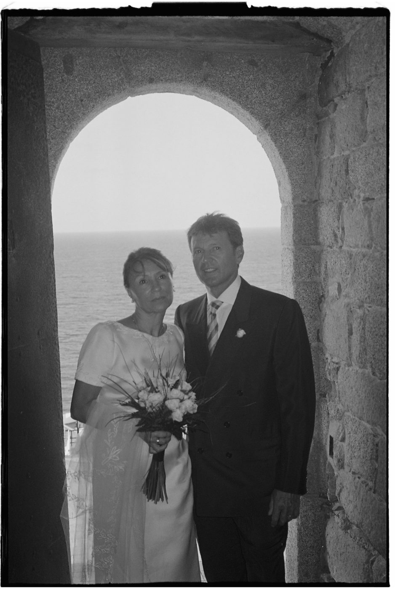
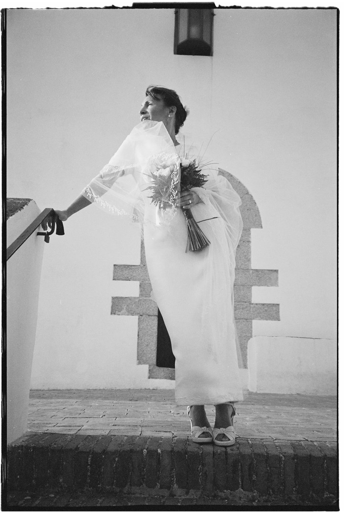
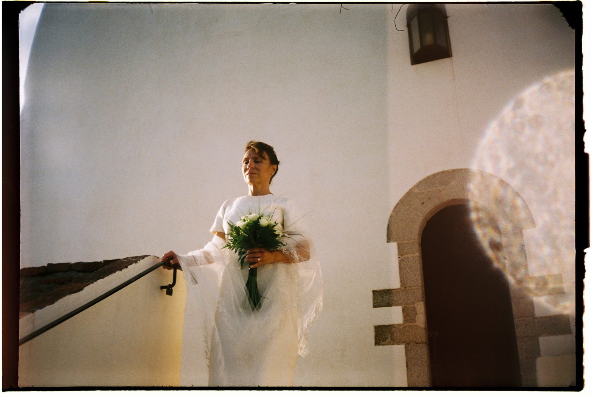
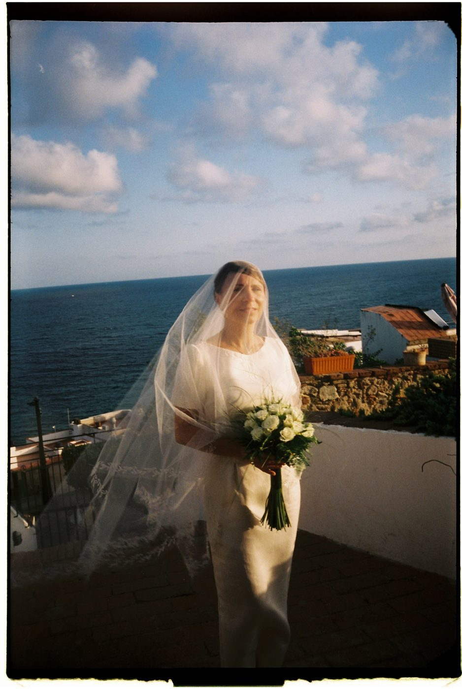

35mm black & white + colour ▸ 1 — 27 [year]
The Hermitage
A wedding by the sea,
one afternoon on film.
- Film
- 35mm b&w + colour
- Camera
- [camera]
- Place
- [place]
- Type
- Wedding
Contact sheet
27 frames — a few of them ↓▸ {{f.n}}{{f.n}}A
▸ {{f.n}}{{f.n}}A
▸ {{f.n}}{{f.n}}A


[A line in your own words about this day.]






two frames in colour, light leak included